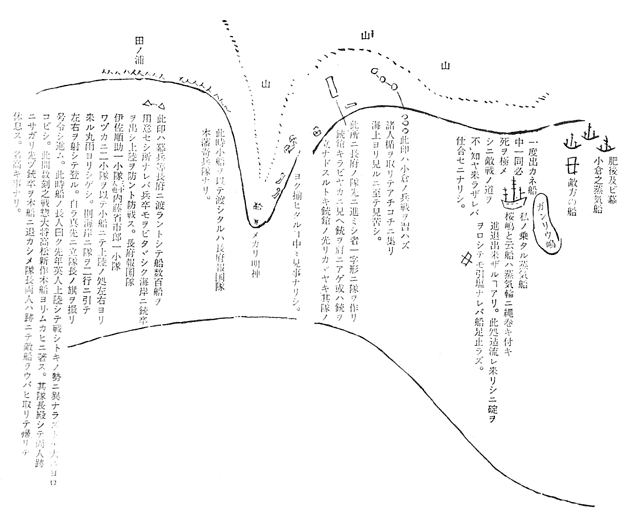
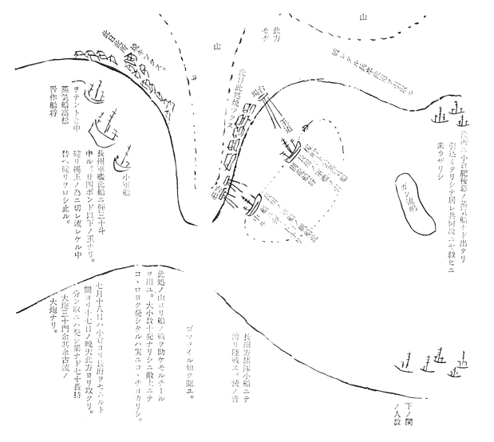
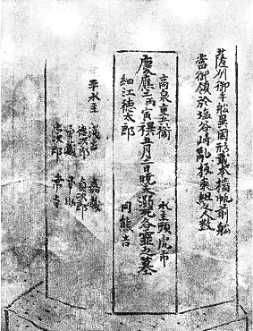
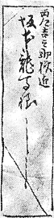
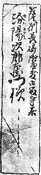

此手紙もし親類之方などに御為レ見被レ成 候ハヾ必ず／＼誰れかに御書取らセ被レ成候て御見セ。順蔵さんえも其書き写さ礼 し書を御見セ。私手紙ハ必ず／＼乙姉さんの元に御納め可レ被レ遣候。
龍馬
御一同様
一、今春上京之節伏見にて難にあい候頃より、鹿児嶋に参り八月中旬より又長崎に出申候。先日江ノ口之人溝渕広之丞に行あひ候一、別紙之内女の手紙有レ之。是ハ伏見寺田屋おとセと申者にて候。是ハ長州家及び国家に志ある人々ハ助けられ候事ども有レ之者なり。元より学文も十人並の男子程の事ハいたし居り候ものなり。それハ薩州に送り来り候手紙一つ指上候。伏見之危難よく分り申候。
一、別紙に木圭と申人の（桂小五郎と申人なり。）手紙有レ之候。是ハ長州の政事を預り候第一之人物にて、此人之手跡、四方之人ほしがり候。幸手元に数々有レ之から指出候。
一、
一、上ニ申伏見之難ハ去ル正月廿三日夜八ツ時半頃なりしが、一人の連れ三吉慎蔵と咄して風呂より揚り、最早寝んと致し候処に、ふしぎなる哉（此時二階居申候。）人の足音のしのび／＼に二階下をあるくと思ひしに、六尺棒の音から／＼と聞ゆ、おり柄兼而御聞に入し婦人、（名ハ龍今妻也。）勝手より
 よりて壁に添て立し者あり。夫を見るより又打金を上ゲ、慎蔵が鎗持て立たる左の肩を銃の台にいたし、敵の胸をよく見込ミて打たりしに、敵丸に中りしと見へて、唯ねむりてたをるゝ様に前にはらばふ如くたをれたり。此時も敵の方にハ実ニドン／＼障子を打破るやらふすまを踏破るやら物音すさまじく、されども一向に手元にハ来らず、此間に銃の玉込ミせんと銃の此様なるもの取りはづし、二丸迄ハ込たれども先刻左右の指に手を負ひ、手先き思ふ様ならず、破れ兼たり。両人して刀を以てさん／″＼に切破り、足にて京の屋敷出づ。（此頃余程短銃上達す。）
よりて壁に添て立し者あり。夫を見るより又打金を上ゲ、慎蔵が鎗持て立たる左の肩を銃の台にいたし、敵の胸をよく見込ミて打たりしに、敵丸に中りしと見へて、唯ねむりてたをるゝ様に前にはらばふ如くたをれたり。此時も敵の方にハ実ニドン／＼障子を打破るやらふすまを踏破るやら物音すさまじく、されども一向に手元にハ来らず、此間に銃の玉込ミせんと銃の此様なるもの取りはづし、二丸迄ハ込たれども先刻左右の指に手を負ひ、手先き思ふ様ならず、破れ兼たり。両人して刀を以てさん／″＼に切破り、足にて京の屋敷出づ。（此頃余程短銃上達す。）
此伏見江取り手の来りしを詮儀 するに大坂町奉行ハ松平大隅守と云て、同志の様に度咄しなど致し、面会時したるに此度ハ大坂より申来りしとの事、合点ゆかず猶々聞合すにはたして町奉行ハ気の毒がり居候よし。此大坂より申来りしハ幕府大目付某が伏見奉行へ申来るにハ、坂本龍馬なるものハ決而 ぬすみかたりハ致さぬ者なれども、此者がありてハ徳川家の御為にならぬと申て是非殺す様との事のよし。此故ハ幕府の敵たる長州薩州の間に往来して居との事なり。其事を聞多 る薩州屋敷の小松帯刀、西郷吉之助なども皆、大笑にてかへりて私が幕府のあわて者に出逢てはからぬ幸と申あひ候。
此時うれしきハ、西郷吉之助（薩州政府第一之人、当時国中に而ハ鬼神と云ハれる人なり。）ハ伏見の屋敷よりの早使より大気遣にて、自ら短銃を玉込し立出んとせしを、一同押留てとふ／＼京留守居吉井幸助、馬上にて士六拾人計り引連れ、むかひに参りたり。此時伏見奉行よりも打取れなどのゝしりしよしなれども、大乱にも及ぶべしとて其儘に相成候よし。実に盛なる事にて有レ之候。私ハ是より少々かたハにハなりたれども、一生の晴にて有レ之候。疵ハ六十日計り致し能く直りたり。左の大指ハ元の如し、人指ハ疵口よくつげて只思ふ様に叶ぬと申斗りにて、外見苦しき事なし。右の大指のわた持をそがれしハ一番よく直りたり。右の高指の先きの節、少疵つけども直様 治りたり。
一、七月頃、蒸気船（桜嶋といふふね）を以て薩州より長州江使者ニ行候時被レ頼候而、咄しなど致し、面会時したるに此度ハ大坂より申来りしとの事、合点ゆかず猶々聞合すにはたして町奉行ハ気の毒がり居候よし。此大坂より申来りしハ幕府大目付某が伏見奉行へ申来るにハ、坂本龍馬なるものハ決此時うれしきハ、西郷吉之助（薩州政府第一之人、当時国中に而ハ鬼神と云ハれる人なり。）ハ伏見の屋敷よりの早使より大気遣にて、自ら短銃を玉込し立出んとせしを、一同押留てとふ／＼京留守居吉井幸助、馬上にて士六拾人計り引連れ、むかひに参りたり。此時伏見奉行よりも打取れなどのゝしりしよしなれども、大乱にも及ぶべしとて其儘に相成候よし。実に盛なる事にて有レ之候。私ハ是より少々かたハにハなりたれども、一生の晴にて有レ之候。疵ハ六十日計り致し能く直りたり。左の大指ハ元の如し、人指ハ疵口よくつげて只思ふ様に叶ぬと申斗りにて、外見苦しき事なし。右の大指のわた持をそがれしハ一番よく直りたり。右の高指の先きの節、少
疵つけども七月以後戦ひ止時なかりしが、とふ／＼十月四日と成り長州より攻取し土地ハ小倉江渡し、以後長州ニ敵すべからざるを盟ひ、夫より地面を改めしに、六万石斗ありしよし。
右戦争中一度大戦争がありしに長州方五拾人計打死いたし候時（軍にて味方五十人も死と申時、敵方合セておびたゞしき死人也。）先き手しバ／＼敗セしに、高杉
咄しなどいたしへた／＼笑ながら気を付て居る。敵ハ肥後の兵などにて強かりけれバ、普作下知して酒樽を数かき出して、戦場ニて是を開かせなどしてしきりに戦ハセ、とふ／＼敵を打破り肥後の陣幕旗印抔不レ残分取りいたしたり。私共兼而ハ戦場と申セバ人夥しく死する物と思ひしに、人の拾人と死する程之戦なれバ、余程手強き軍が出来る事に候。

一、水通三丁目に居し上田宗虎
幕兵強くして破れ難し。上田、士卒に下知して進ミ兎角して砲台之外よりかき上り内に飛入しに、内ハまた外なる敵に向ひ数玉など打て盛なりしに、上田も士卒に下知するうち、幕之大炮号令官と行逢、刀を抜間もなくて組合しに敵方ハ破れぎハなり、つゞく兵ハなく宗虎方にハ部下之銃卒壱人馳セ来り、ケベールを以て打殺セしに組討にてたをれたる処なれバ、敵をバ打殺しつれども、宗虎がうでを打抜たり。宗虎ハ敵をバ追払ひ其台場をも乗り取り、自身ハ手をいためし計り之事にて、此頃名高き高名、中花敷事と皆浦山敷がり申候。此一、お屋べどのの養子ハ如何様なる暮し方にや、
一、養子の事ハ如何様之武士に候哉、逢申度候。私も此頃は色
見聞いたす内、武士だけの事ハ、今ハ日本中ニ一、養子に御申聞被レ下度事ハ御国にて流行申候長剣ハ兼而も申候通り壱人／＼之

一、池
一、銃にて久しく戦時ハ必そこに拾人、かしこに弐拾人、或ハ三四拾人計り
一、当時天下之人物と云ハ、
徳川家ニハ大久保一翁、勝安房守。
越前にてハ三岡八郎、長谷部勘右衛門。
肥後ニ 横井平四郎。
薩にて 小松帯刀。（是ハ家老にて海軍惣大将なり。）
西郷吉之助。（是ハ国内軍事に懸る事国家之進退此人ニ預る。）
長州にて 桂小五郎。（国家之進退を預る当時木戸寛次郎。）
高松 普 作。（此人ハ軍事ニ預る、此人下の関に出小倉攻之惣大将当時谷潜蔵。）
一、私唯今志越前にてハ三岡八郎、長谷部勘右衛門。
肥後ニ 横井平四郎。
薩にて 小松帯刀。（是ハ家老にて海軍惣大将なり。）
西郷吉之助。（是ハ国内軍事に懸る事国家之進退此人ニ預る。）
長州にて 桂小五郎。（国家之進退を預る当時木戸寛次郎。）
高
一、こゝにあはれなるハ
右之内生残る者四人と云。

細江徳太郎と云ハ池蔵太事ニ而候。高泉と云、黒木半兵衛とて千葉
一、何卒去年御頼申上候父上を初め、皆様之御詠歌など御越し被レ遣度候。
左之通御記し被レ成。
又其上を左之通
右十二月四日長崎本はかた町小曽根英四郎方にて記す。此宿ハ此八月より定宿として滞留致し居候。